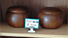
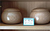
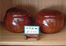
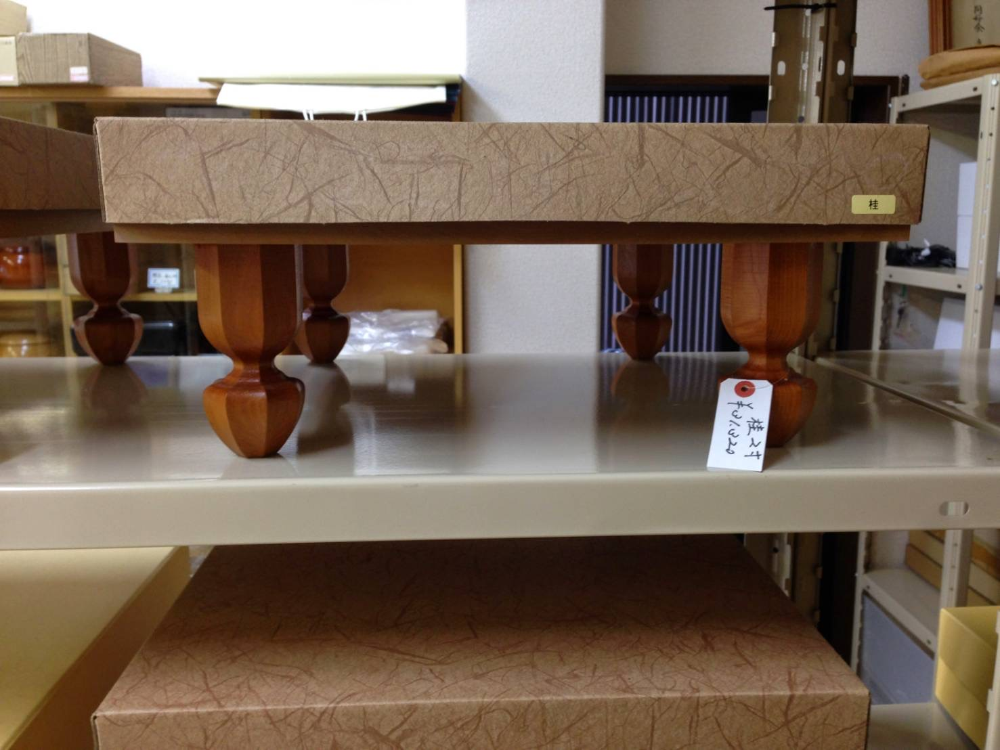
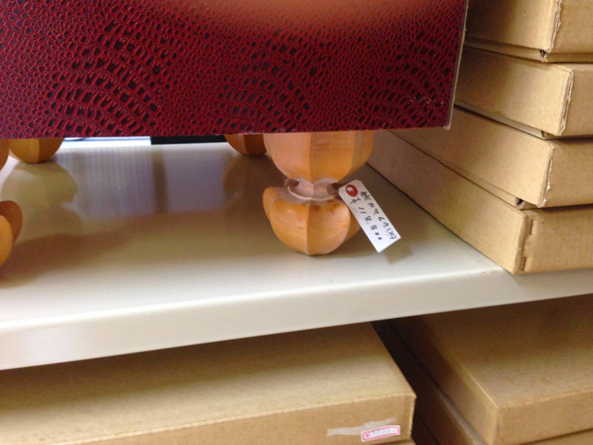

唐木屋碁盤店のご紹介
一石、一指しに心を込めて。
一生ものの「舞台」を仕立て、見守り続ける。
昭和二十六年に静岡で創業以来、七十余年。唐木屋碁盤店は、親子二代にわたり、囲碁・将棋用具の販売と製作・修理に心血を注いできました。
私たちが目指すのは、対局者が「最高の集中」を得られる舞台を整えることです。店主自らが厳しい目で選び抜いた本榧（ほんかや）などの良材を、熟練の鉋（かんな）がけで平滑に整え、伝統技法「太刀盛り（たちもり）」によって凛とした目盛りを刻み込みます。
そうして仕立てられた盤は、石を置いた瞬間に「コトン」と澄んだ音を響かせ、打ち手にこの上ない充足感をもたらします。確かな品質の品をお届けすることはもちろん、数十年、百年と受け継がれていく盤の「主治医」として、削り直しやメンテナンスといったアフターケアまで責任を持って承ります。
初めての一面をお探しの方から、愛用の道具を末永く大切にしたい方まで。専門店ならではの知識と技術で、あなただけの一生ものとの出会いをお手伝いいたします。どうぞ気兼ねなくご相談ください。
ピックアップ商品

高級碁笥

本榧碁盤

蛤碁石

将棋盤

将棋盤